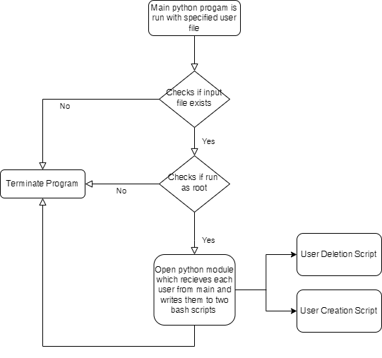
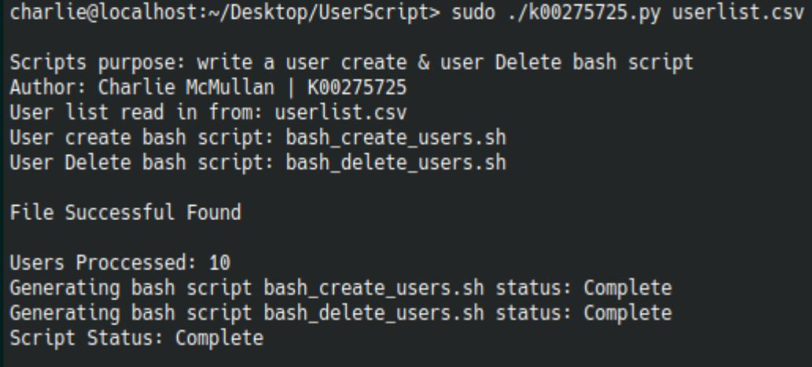
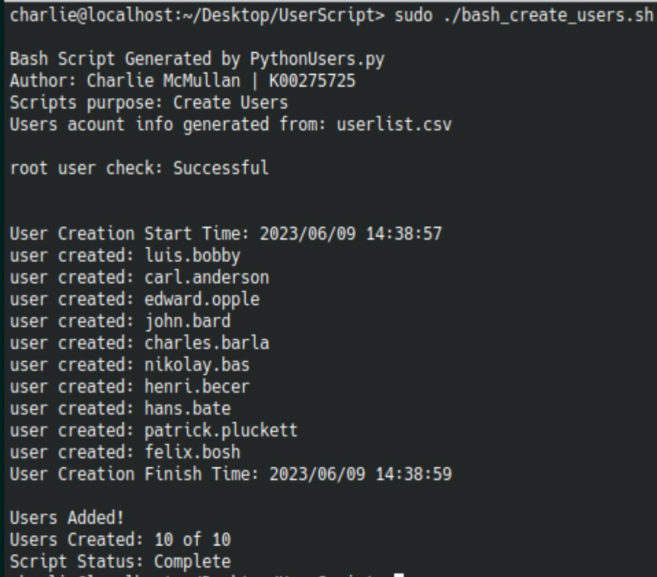
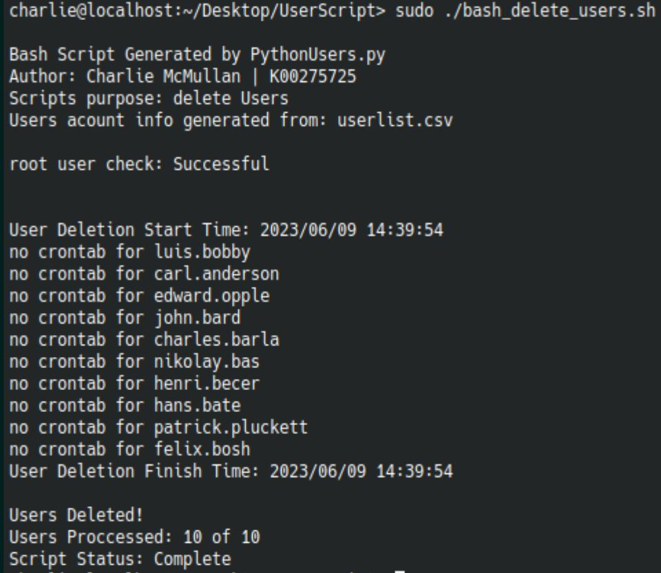

Project
User Creation & Delection Script
About
This is a Python program that reads a user file with specified names and passwords. The user file can be anything, even an Excel sheet containing the user information. The program will automatically write two Bash scripts for the user. These two bash scripts are user creation and user deletion. For the examples below I used 10 users to keep it visually simple, however as this was a college project, I created 100 users and deleted them for the college assignment. All the scripts will perform checks such as root mode is on when launching the scripts and will provide status updates.
Example
Running python program
Running user creation script
running user delection script
